Sobre mí
Actualmente curso la carrera de Ingeniería en Computación en la Universidad UNE.
Mi enfoque principal está en el diseño y administración de bases de datos, así como en el desarrollo de aplicaciones web y videojuegos.
A lo largo de mi formación, he trabajado en proyectos integrando tecnologías como Firebase y React,
y también me encuentro explorando campos como la inteligencia artificial y la ciberseguridad.
Me interesa especialmente la construcción de sistemas interactivos y eficientes que aporten valor real.
Tecnologías con las que he trabajado o estoy aprendiendo:
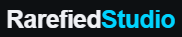
Rarefied Studio
Rarefied Studio es un proyecto enfocado en el desarrollo de páginas web modernas,
optimizadas y orientadas a negocios locales y emprendimientos.
Se especializa en la creación de landing pages atractivas, rápidas y responsivas,
diseñadas para convertir visitantes en clientes.
Tecnologías y características:
- Diseño responsivo adaptable a móviles
- Optimización SEO básica
- Integración con WhatsApp para contacto directo
- Animaciones modernas y UI/UX profesional
- Estructura escalable para futuros proyectos
- Alta velocidad de carga
Ver proyecto

CardMaster
CardMaster es un juego de cartas por turnos inspirado en Triple Triad,
ambientado en un mundo de fantasía medieval.
Los jugadores construyen su mazo con cartas únicas, cada una con historia,
estadísticas y rareza, para enfrentarse en un tablero 3x3.
Características:
- Modo contra CPU con inteligencia artificial básica
- Multijugador en tiempo real usando Firebase
- Sistema de tienda y progresión
- Colección dinámica de cartas
- Diseño visual oscuro estilo medieval
- Compatible con dispositivos móviles
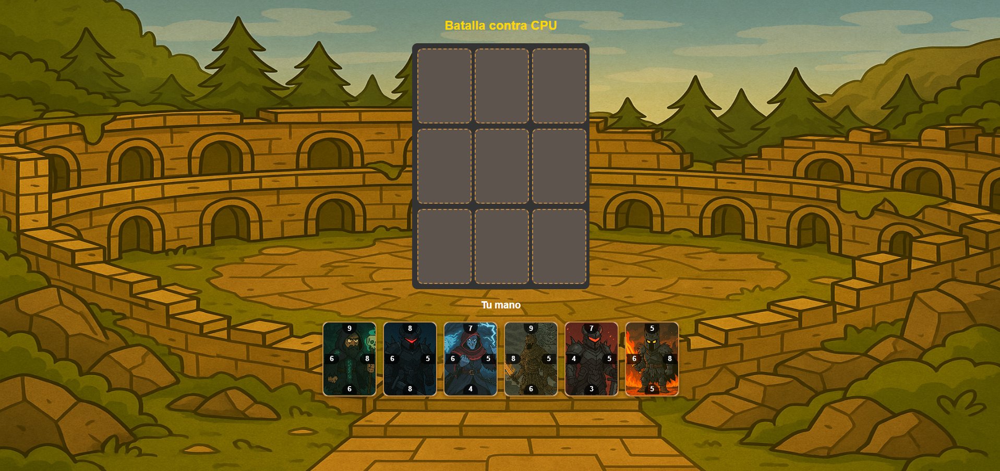
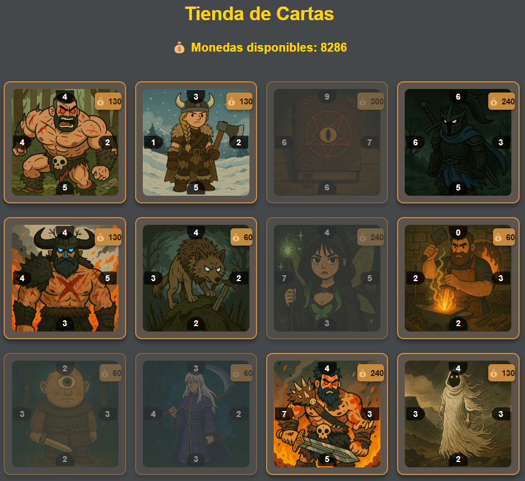
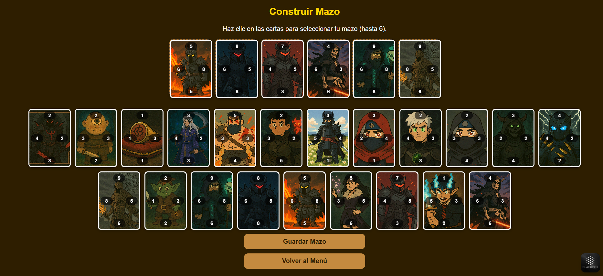
Ver proyecto
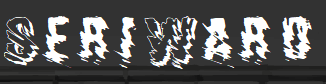
SeriWard
Aplicación de escritorio diseñada para la gestión de pedidos en talleres de serigrafía.
Desarrollado con: Java, MySQL y Python
- Creación y gestión de pedidos
- Generación automática de documentos PDF
- Detección de colores mediante inteligencia artificial
- Vista previa del diseño
- Almacenamiento de datos en base de datos
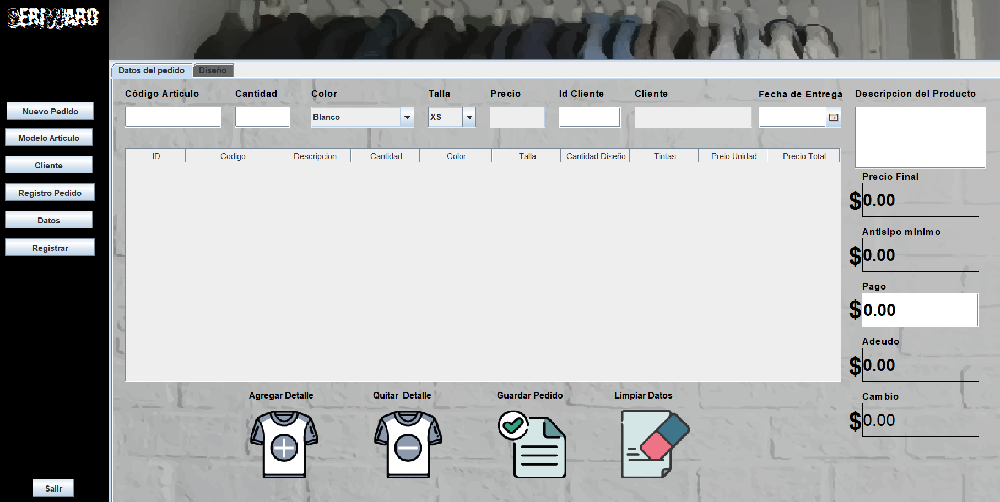
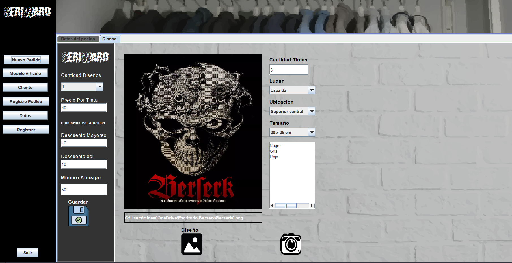
Proyecto local
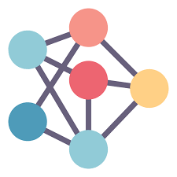
Segmentación de imagen por color
Aplicación que analiza imágenes para identificar y separar colores de forma automática.
Tecnología: Python (K-means)
- Agrupación de píxeles por similitud de color
- Alta precisión en detección (~95%)
- Optimización para análisis visual
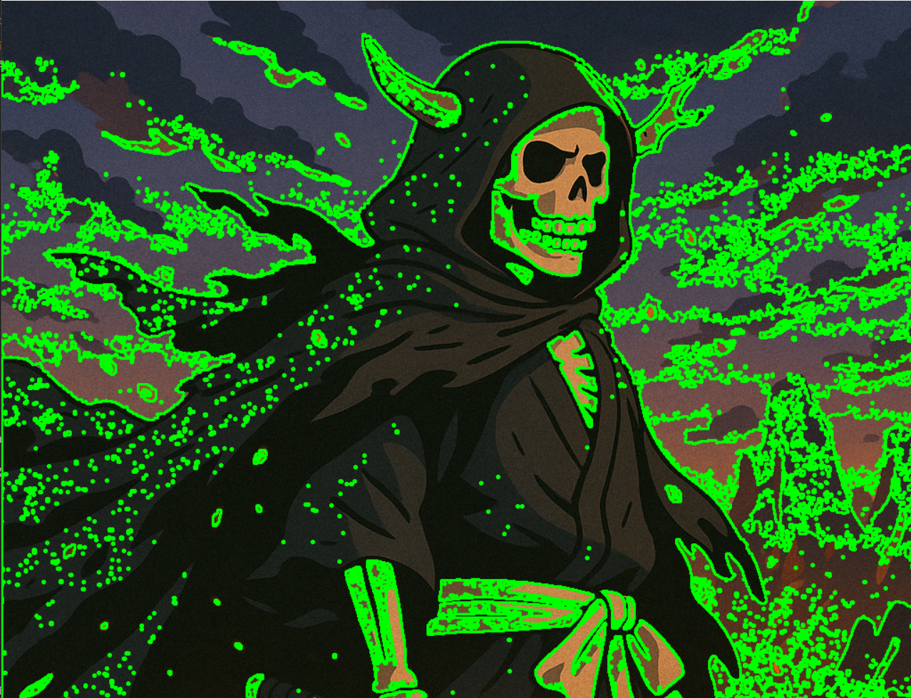
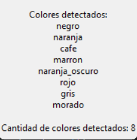
Proyecto local
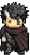
DarkPixel
Juego individual donde el objetivo es sobrevivir el mayor tiempo posible
derrotando enemigos y acumulando puntos.
Tecnologías: Python, Pygame
- Inspirado en Dark Souls
- Sistema de combate en tiempo real
- Incremento progresivo de dificultad
- Mecánica de riesgo/recompensa al curarse
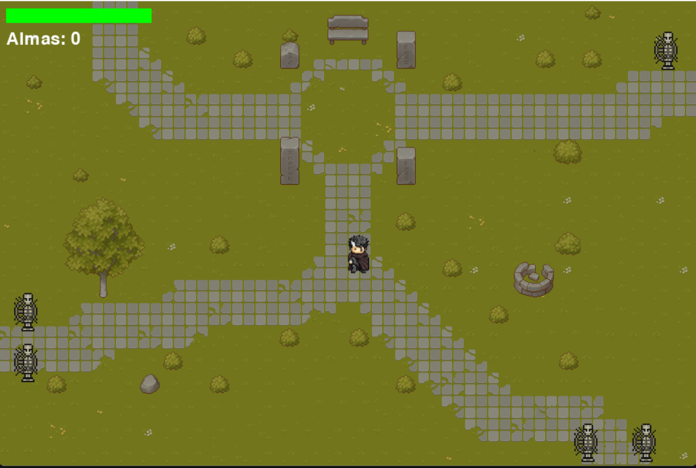
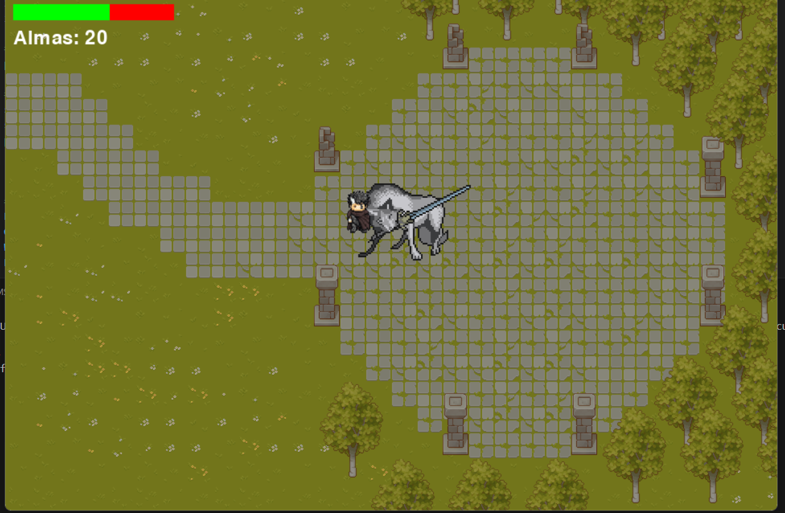
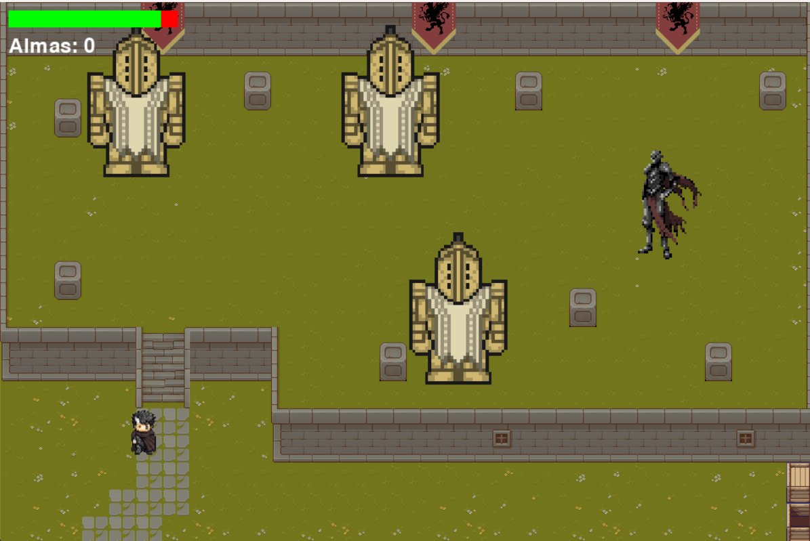
Proyecto local